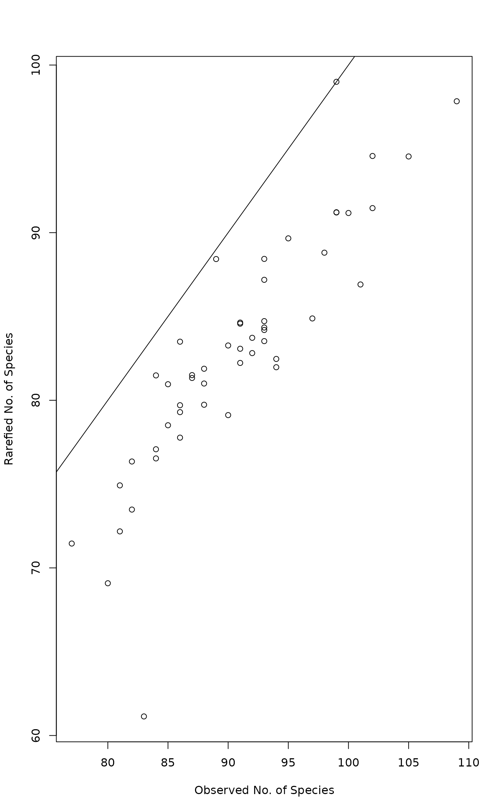
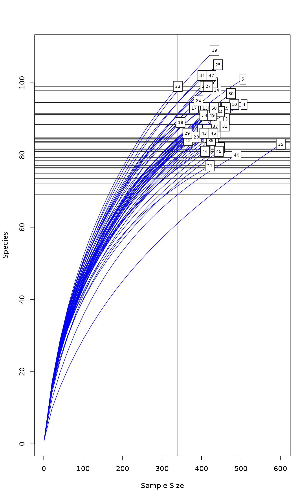

Rarefaction Species Richness
rarefy.RdRarefied species richness for community ecologists.
Usage
rarefy(x, sample, se = FALSE, MARGIN = 1)
rrarefy(x, sample)
drarefy(x, sample)
rarecurve(x, step = 1, sample, xlab = "Sample Size", ylab = "Species",
label = TRUE, col, lty, tidy = FALSE, ...)
rareslope(x, sample)Arguments
- x
Community data, a matrix-like object or a vector.
- MARGIN
Margin for which the index is computed.
- sample
Subsample size for rarefying community, either a single value or a vector.
- se
Estimate standard errors.
- step
Step size for sample sizes in rarefaction curves.
- xlab, ylab
Axis labels in plots of rarefaction curves.
- label
Label rarefaction curves by rownames of
x(logical).- col, lty
plotting colour and line type, see
par. Can be a vector of lengthnrow(x), one per sample, and will be extended to such a length internally.- tidy
Instead of drawing a
plot, return a “tidy” data frame than can be used in ggplot2 graphics. The data frame has variablesSite(factor),SampleandSpecies.- ...
Parameters passed to
nlm, or toplot,linesandordilabelinrarecurve.
Details
Function rarefy gives the expected species richness in random
subsamples of size sample from the community. The size of
sample should be smaller than total community size, but the
function will work for larger sample as well (with a warning)
and return non-rarefied species richness (and standard error =
0). If sample is a vector, rarefaction of all observations is
performed for each sample size separately. Rarefaction can be
performed only with genuine counts of individuals. The function
rarefy is based on Hurlbert's (1971) formulation, and the
standard errors on Heck et al. (1975).
Function rrarefy generates one randomly rarefied community
data frame or vector of given sample size. The sample
can be a vector giving the sample sizes for each row. If the
sample size is equal to or larger than the observed number
of individuals, the non-rarefied community will be returned. The
random rarefaction is made without replacement so that the variance
of rarefied communities is rather related to rarefaction proportion
than to the size of the sample. Random rarefaction is
sometimes used to remove the effects of different sample
sizes. This is usually a bad idea: random rarefaction discards valid
data, introduces random error and reduces the quality of the data
(McMurdie & Holmes 2014). It is better to use normalizing
transformations (decostand in vegan) possible
with variance stabilization (decostand and
dispweight in vegan) and methods that are not
sensitive to sample sizes.
Function drarefy returns probabilities that species occur in
a rarefied community of size sample. The sample can be
a vector giving the sample sizes for each row. If the sample
is equal to or larger than the observed number of individuals, all
observed species will have sampling probability 1.
Function rarecurve draws a rarefaction curve for each row of
the input data. The rarefaction curves are evaluated using the
interval of step sample sizes, always including 1 and total
sample size. If sample is specified, a vertical line is
drawn at sample with horizontal lines for the rarefied
species richnesses.
Function rareslope calculates the slope of rarecurve
(derivative of rarefy) at given sample size; the
sample need not be an integer.
Rarefaction functions should be used for observed counts. If you think it is necessary to use a multiplier to data, rarefy first and then multiply. Removing rare species before rarefaction can also give biased results. Observed count data normally include singletons (species with count 1), and if these are missing, functions issue warnings. These may be false positives, but it is recommended to check that the observed counts are not multiplied or rare taxa are not removed.
Value
A vector of rarefied species richness values. With a single
sample and se = TRUE, function rarefy returns a
2-row matrix with rarefied richness (S) and its standard error
(se). If sample is a vector in rarefy, the
function returns a matrix with a column for each sample size,
and if se = TRUE, rarefied richness and its standard error are
on consecutive lines.
Function rarecurve returns invisible list of
rarefy results corresponding each drawn curve. Alternatively,
with tidy = TRUE it returns a data frame that can be used in
ggplot2 graphics.
References
Heck, K.L., van Belle, G. & Simberloff, D. (1975). Explicit calculation of the rarefaction diversity measurement and the determination of sufficient sample size. Ecology 56, 1459–1461.
Hurlbert, S.H. (1971). The nonconcept of species diversity: a critique and alternative parameters. Ecology 52, 577–586.
McMurdie, P.J. & Holmes, S. (2014). Waste not, want not: Why rarefying microbiome data is inadmissible. PLoS Comput Biol 10(4): e1003531. doi:10.1371/journal.pcbi.1003531
Examples
data(BCI)
S <- specnumber(BCI) # observed number of species
(raremax <- min(rowSums(BCI)))
#> [1] 340
Srare <- rarefy(BCI, raremax)
plot(S, Srare, xlab = "Observed No. of Species", ylab = "Rarefied No. of Species")
abline(0, 1)

rarecurve(BCI, step = 20, sample = raremax, col = "blue", cex = 0.6)
